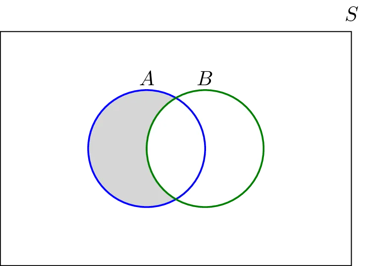

Operations on Sets
-
Union
The union of two sets is a set containing all elements that are in A or in B (possibly both).
Example:- {1,2} ∪ {2,3} = {1,2,3}
-
Intersection
The intersection of two sets A and B, denoted by A∩B, consists of all elements that are both in A and B.
Example:- {1,2} ∩ {2,3} = {2}

The intersection of A and B is the middle part
-
Disjoint
Set A and set B are called disjoint sets if no element is common to A and B. i.e. A and B are disjoint sets then (A ∩ B = ∅)
Example:- A = {1,3,5}, B = {2,4,6} and C = {a,b,c}
A ∩ B ∩ C = ∅
-
Complement
The complement of a set A, denoted by Ac, is elements in Universal Set which are not in A
-
Difference
The set A − B consists of elements that are in A but not in B.
Example:- A = {1,2,3} and B = {3,5}

then, A - B = {1,2}
Some conclusions from set operations
-
A ∪ ∅ = A
Hence ∅ i.e. empty set is identity set for 'union operation'.
-
A ∩ S = A
S i.e. universal set is identity set for 'intersection operation'.
-
A ∪ S = S
A ⊂ S and A ∪ S = S if B ⊂ A then A ∪ B = A i.e. union of super set and subset is super set.
-
A ∩ ∅ = ∅
∅ ⊂ A and A ∩ ∅ = ∅ if B ⊂ A then A ∩ B = B i.e. intersection of super set and subset is subset.
-
If B ⊂ A, then A ∩ B = B and A ∪ B = A
-
A ⊂ A ∪ B also B ⊂ A ∪ B
-
A ∩ B ⊂ A also A ∩ B ⊂ B
-
A ∩ B ⊂ A ⊂ A ∪ B and A ∩ B ⊂ B ⊂ A ∪ B
A and B sets. A ∩ B is the smallest set and A ∪ B is the largest set. A contains A ∩ B and A is contained in A ∪ B. Similarly B contains A ∩ B and B is contained in A ∪ B.
-
As A ∩ B ⊂ A
(A ∩ B) ∪ A = A [super set] (A ∩ B) ∩ A = (A ∩ B) [subset]
-
As A ⊂ A ∪ B
A ∩ (A ∪ B) = A [subset] A ∪ (A ∪ B) = (A ∪ B) [super set]
-
(A - B) ∪ (A ∩ B) ∪ (B - A) = A ∪ B and (A - B), (A ∩ B), (B - A) are pairwise disjoint.
i.e. (A - B) ∩ (A ∩ B) = ∅ (A - B) ∩ (B - A) = ∅ (A ∩ B) ∩ (B - A) = ∅ Hence (A - B), (A ∩ B), and (B - A) are partitions of A ∪ B.
-
A ∪ A' = S
Union of A and its complement gives identity set for intersection operation.
-
A ∩ A' = ∅
Intersection of A and its complement gives identity set for union operation.
Let S be the universal set, and A,B,C,D are subsets of S. Then